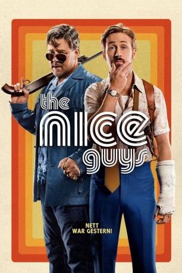

#4516 The Nice Guys
 gesehen am 05.10.2016
gesehen am 05.10.2016
 
 IMDB-Wertung: 7.4 / 10
IMDB-Wertung: 7.4 / 10  Metascore: 0
Metascore: 0 
Holland March, ein abgehalfterter Privatdetektiv, und Jackson Healy, der als Mann fürs Grobe angeheuert wird, haben nicht viel gemeinsam. Doch dann werden beide in den Fall der vermissten Amelia verstrickt. Widerwillig zur Zusammenarbeit gezwungen, streifen sie gemeinsam mit Marchs pubertierender Tochter Holly durch Los Angeles, um verworrenen Hinweisen auf den Grund zu gehen. Bis Amelias Spur sie zu einer Multi-Milliarden-Dollar-Verschwörung führt, die bis in die höchsten Kreise reicht und sie zum Ziel skrupelloser Profikiller macht...
Jahr: 2016
Dauer: 116 Minuten
FSK: 16
Land: USA Studio: Warner Bros.Tonspuren: DD5.1 - ,
Untertitel: Deutsch,
Auflösung: 1080p (1920x800) Größe: 9277 MB
Genre: Action, Komödie, Krimi, Mystery, Thriller
Regisseur: Shane Black
Drehbuch: Julien Rappeneau
Soundtrack:
Darsteller:
 Russell Crowe als Jackson Healy
Russell Crowe als Jackson Healy Ryan Gosling als Holland March
Ryan Gosling als Holland March Angourie Rice als Holly March
Angourie Rice als Holly March Matt Bomer als John Boy
Matt Bomer als John Boy Margaret Qualley als Amelia Kuttner
Margaret Qualley als Amelia Kuttner Yaya DaCosta als Tally
Yaya DaCosta als Tally Keith David als Older Guy
Keith David als Older Guy Beau Knapp als Blueface
Beau Knapp als Blueface Lois Smith als Mrs. Glenn
Lois Smith als Mrs. Glenn- Murielle Telio als Misty Mountains
- Gil Gerard als Bergen Paulsen
 Daisy Tahan als Jessica
Daisy Tahan als Jessica Kim Basinger als Judith Kuttner
Kim Basinger als Judith Kuttner Jack Kilmer als Chet
Jack Kilmer als Chet- Lance Valentine Butler als Kid on Bike
 Ty Simpkins als Bobby
Ty Simpkins als Bobby- Tammi Arender als Reporter
- Rebecca Dalton Rusk als Fred's Widow
 Terence Rosemore als Bourbon Bartender
Terence Rosemore als Bourbon Bartender- Michelle Rivera als Medic
- Amy Goddard als Nun
- Frank Mottek als Radio Annoucer
- Joanne Spracklen als Healy's Ex-Wife
- Greg Lindsay als Stand Up Comic
- Maddie Compton als Janet
- Meredith Berg als Die-In Protester
- Lauren Marini als Die-In Protester
- Ward Roberts als Die-In Protester
- Ryan Powers als Die-In Protester
- Lauren Bair als Die-In Protester
- Zarah Kulczycki als Die-In Protester
- Hana Yuka Sano als Die-In Protester
- Marvin Ross als Valet at Sid's
 Rachele Brooke Smith als Party Girl
Rachele Brooke Smith als Party Girl- Adriana Karras als Party Girl
- Milo Wesley als Pornookio
- Matthew Warzel als Bartender at Sid's
- Angela Everhart als Bartender at Mermaid Bar
 Joshua Hoover als Dork
Joshua Hoover als Dork Yvonne Zima als Young Porn Queen
Yvonne Zima als Young Porn Queen- Lexi Johnson als Pocahontas
- Chloe Hurst als Exotic Girl at Sid's
 Gary Weeks als Officer McMillian
Gary Weeks als Officer McMillian Charles Green als Dog Walker
Charles Green als Dog Walker- Gary Wolf als Flight Deck Bartender
 Hannibal Buress als Bumble
Hannibal Buress als Bumble- Steve Wilder als Perry the Lawyer
- Garrett Carpenter als Buddy
- Hank Quillen als Maintenance Man
 Michael Beasley als Bartender at Car Show
Michael Beasley als Bartender at Car Show
Datei: X:\2016(N-Z)\Nice Guys, The (2016, FSK16, 1920x800).mkv seit 04.10.2016
Festplatte: HD 2016(A-Z)
 Es gibt insgesamt 182 Filme in der Gruppe '2016(N-Z)'
Es gibt insgesamt 182 Filme in der Gruppe '2016(N-Z)'